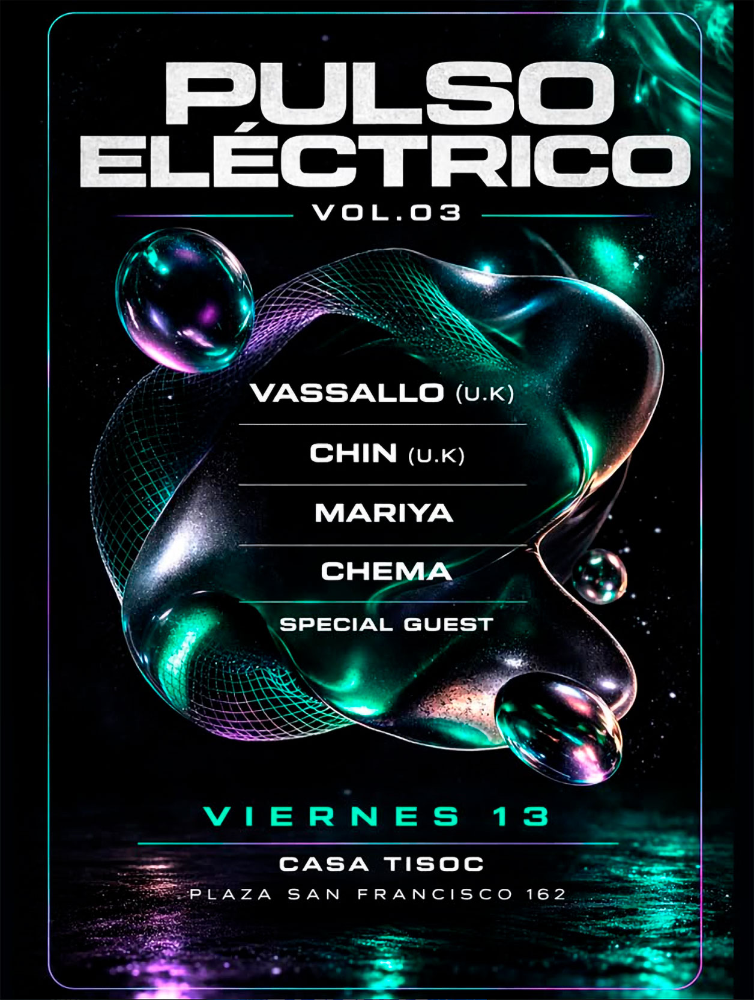

PULSO ELÉCTRICO VOL.03
fecha: 13/03/26 hora: --pm
lugar: Casa Tisoc,
Plaza San Francisco 162, Cusco


Nos vemos este viernes en la tercera edición de Pulso Eléctrico ,
Tendremos una sesión de vinilos a cargo de :
Desde U.K @vassallo_8
Vassallo es un DJ vinyl-only, curador y jefe de sello que opera en el lado más profundo de la cultura de club underground. Sus sets de peak time se mueven con fluidez entre techno hipnótico, electro futurista y breakbeats. Sus sesiones están construidas enteramente en vinilo, priorizando mezclas precisas, control y una narrativa de pista de baile a largo plazo.
Desde U.K @chin_dj8
CHIN es un DJ radicado en Leeds que toca techno, electro y breaks. Sus sets se centran en el ritmo, el groove y la progresión, moviéndose entre techno contundente, electro de carácter mecánico y beats quebrados y percusivos, con un enfoque preciso y funcional pensado para la pista de baile.
Desde Lima @amar.i.ya
Con el tiempo, Mariya ha evolucionado abrazando el vinilo y explorando el house, electro y trance de los años 90, manteniendo siempre su estilo ecléctico y distintivo. Su proyecto Amari se inspira en el tribal, el organic house y sonidos progresivos, creando una experiencia sonora nostálgica pero fresca
Y tb tendremos a nuestro querido Chema Y un special guest que estaremos anunciando pronto